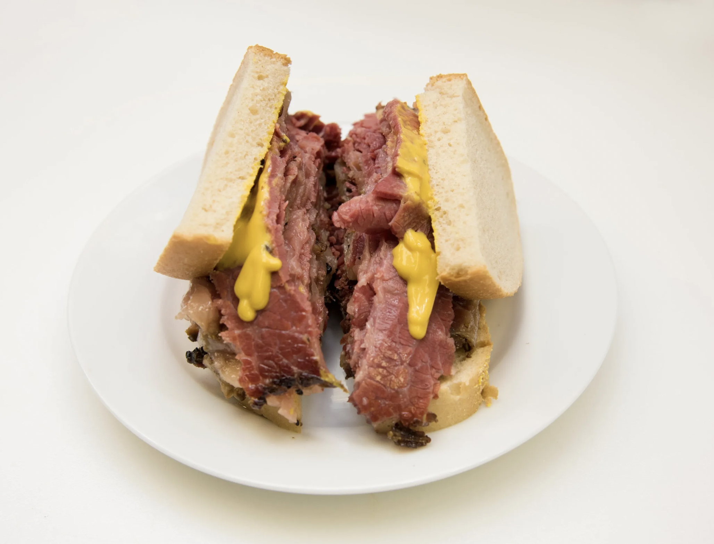

Smoked Meat Sandwiches

How to Make Smoked Meat Sandwiches:
Alright, folks, prepare yourselves for a taste of Montreal's deli tradition!
- Let's start with the meat – the heart and soul of this Montreal classic. We're talking about a blend of spices that'll make your taste buds sing. Think peppercorns, coriander, and a touch of garlic for that extra kick. Rub it all over your meat, then let it work its magic overnight.
- Now, onto the smoking process. We're talking slow and steady, my friends. Let that meat bask in the smoky embrace until it's tender enough to melt in your mouth. It's a labor of love, but trust me, the payoff is worth every savory bite.
- Time to assemble the sandwich. Pile that succulent smoked meat high on rye bread – the foundation of this Montreal masterpiece. Slather on some tangy mustard for that extra zing, then top it off with a pickle on the side. It's a taste of Montreal you won't soon forget.
- Take a moment to revel in your culinary triumph. Let the flavors dance on your palate as you indulge in the rich, smoky goodness of Montreal's finest. Here's to embracing deli tradition in all its delicious glory!
Ingredients
- Beef brisket
- Peppercorns
- Coriander seeds
- Garlic
- Rye bread
- Mustard
- Pickles
Tools You’ll Need:
Smoker
Meat rub
Sharp knife
Cutting board
<-Back to home